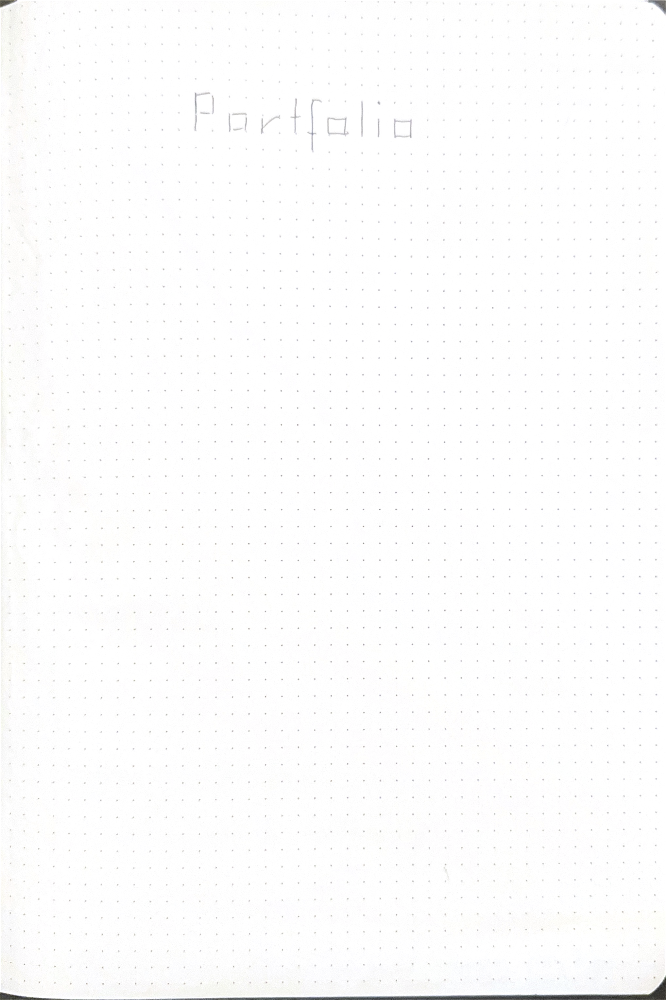

Skip to main content
Petra K.
Interface Design, Hybrid AI Design and Sonification Projects

Sonified paper with dots and hand-written letters P-o-r-t-f-o-l-i-o. Sonification and tool Co-Created with Claude AI
co-created with Claude
.
Case 1: Music AI
Case 2: Open Space
Case 3: Health Hack
Sound icon
Sound Off